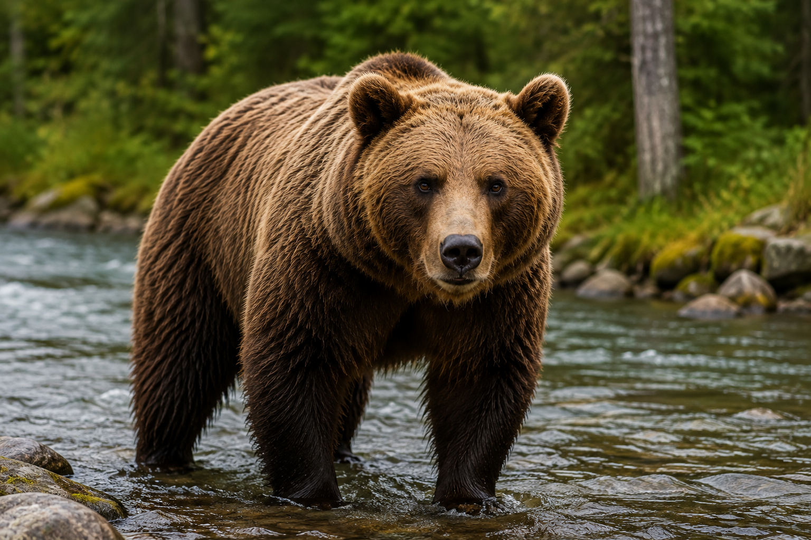
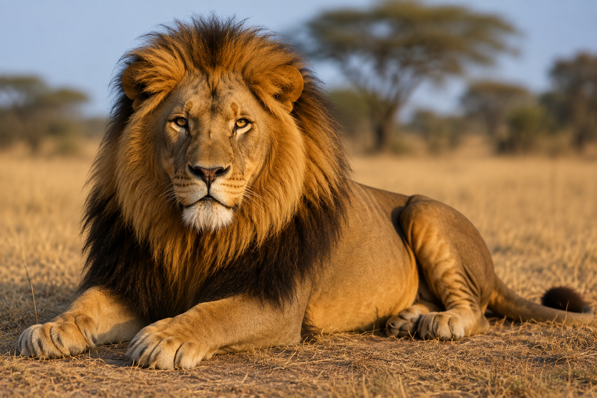
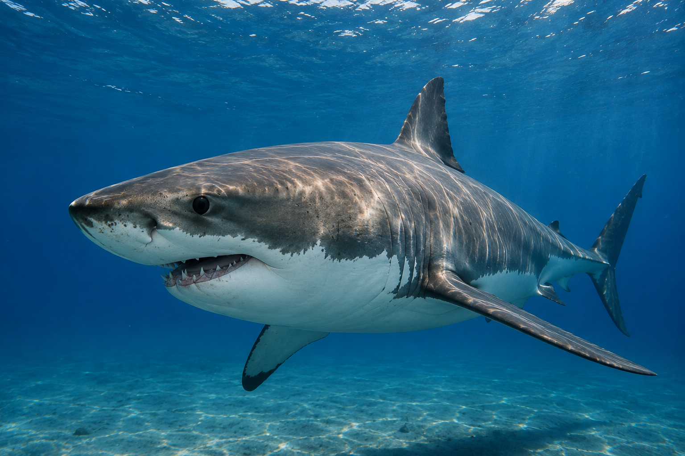

Oso
Los osos son mamíferos grandes y fuertes que habitan distintas regiones del mundo. Su alimentación y comportamiento varían según la especie y el lugar donde viven.
|
 |
León
Los leones son grandes felinos que viven principalmente en África. Son animales sociales que suelen vivir y cazar en grupos llamados manadas.
|
 |
Tiburón
Los tiburones son peces que habitan los océanos de todo el mundo. Existen muchas especies diferentes, con tamaños, comportamientos y formas de alimentación muy variados.
|
 |